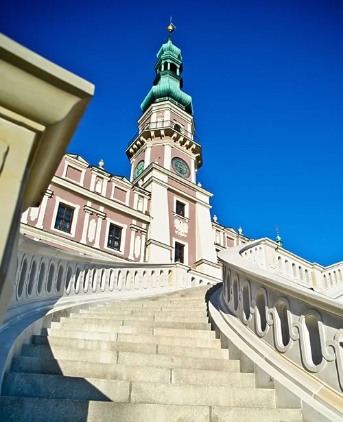
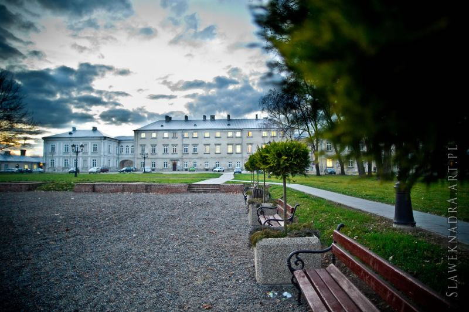
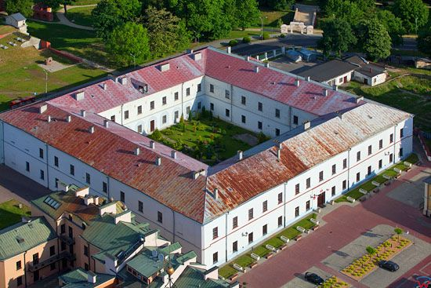
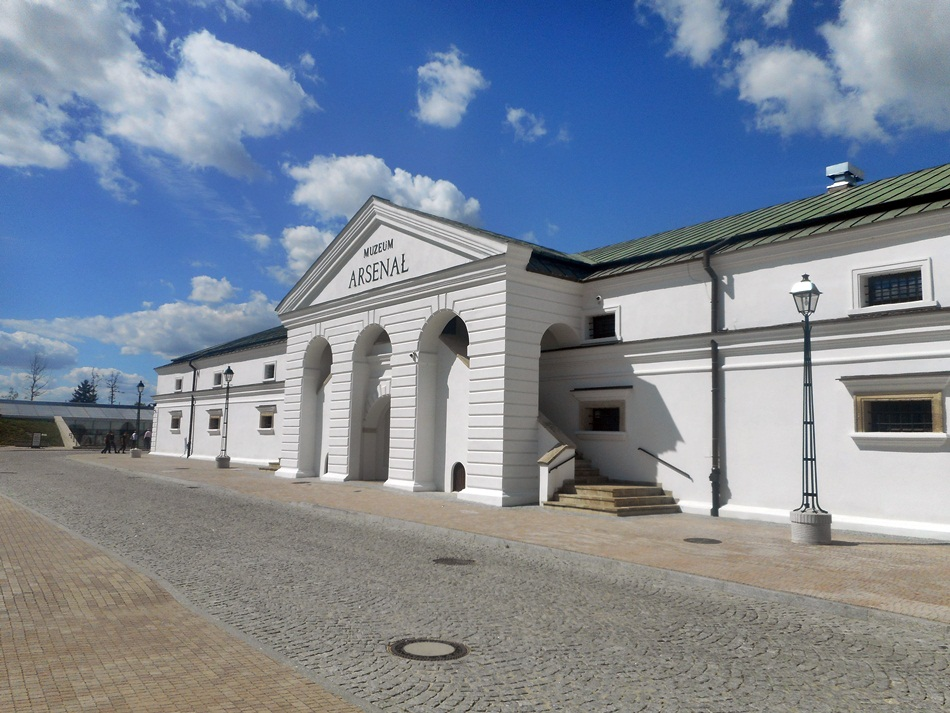

Ratusz
Majestatyczna bryła ratusza dominuje nad rynkiem. Obecny kształt z 52-metrową wieżą i monumentalnymi, dwuskrzydłowymi schodami nadała mu przebudowa przeprowadzona w drugiej połowie XVIII w. Jakkolwiek wydaje się być ideałem symetrii, to lewa część fasady budowli jest o 130 cm szersza od prawej. Jest to tak zręcznie zakamuflowane, że tylko bardzo uważny obserwator dostrzeże tę różnicę. W sezonie letnim, w południe, z balkonu wieży ratuszowej trębacz gra hejnał, ale tylko w trzy strony świata. Według tradycji założyciel miasta Jan Zamoyski nie lubił Krakowa i trąbić w jego kierunku zakazał.
Katedra

Zamojska katedra jest jedną z najwspanialszych polskich świątyń. Zaprojektował ją Bernardo Morando, a fundatorem był Jan Zamoyski. Była wotum dziękczynnym hetmana za jego liczne zwycięstwa i wiodącym ośrodkiem życia religijnego Ordynacji Zamojskiej. Kolejni ordynaci składali w kolegiacie przysięgę na wierność Statutowi Ordynacji, w niej też odbywały się ich pogrzeby, a świątynia stała się mauzoleum rodowym Zamoyskich. Odgrywała w „państwie zamojskim” tę samą rolę, co katedra wawelska w Rzeczypospolitej.
Pałac Zamoyskich
To tu Jan Zamoyski i jego następcy mieszkali wraz z rodzinami. Tu zapadały najważniejsze dla miasta i ordynacji decyzje, tu przyjmowano znakomitych gości, których relacje opisują bogactwo dworu hetmana.
Akademia Zamojska
Dawna akademia to obszerny biały gmach na planie kwadratu z dziedzińcem wewnątrz. Kolejne przebudowy w XVIII i XIX stuleciu pozbawiły ją attyk, portali i obramień okiennych, a arkady od strony dziedzińca zostały zamurowane. Działalność rozpoczęła 15 marca 1595 roku jako trzecia, po krakowskiej i wileńskiej, polska szkoła wyższa. Przewyższała je jednak pod względem poziomu nauczania. Była oczkiem w głowie hetmana Jana Zamoyskiego. Cieszyła się dobrą sławą nie tylko w kraju, ale i poza jego granicami, m.in. w Anglii, Francji i Niemczech
Arsenał
Pierwszy drewniany budynek Arsenału powstał w latach 1582-1583 według projektu Barnarda Moranda i zlokalizowany był w ciągu muru otaczającego pałac Jana Zamoyskiego, w północnej jego części. Dla Jana Zamoyskiego Arsenał był nie tylko składem broni niezbędnej do obrony twierdzy, ale również miejscem ekspozycji stworzonej przez niego kolekcji broni. Kilkadziesiąt lat później, w XVII wieku Arsenał przeniesiono w obecne miejsce w pobliżu Bastionu III i Bramy Szczebrzeskiej